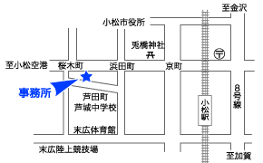

経営レポートCPA通信
事務所で発行している経営等に関するレポートで、企業経営等に大切な情報提供と問題提起を行っています。
CPA→公認会計士（Certifield Public Accountant）の略です。公認会計士は決算書類の監査などの他、財務に関する経営アドバイスを行ないます。
問題提起及びその解決策を提案する石川県小松市の公認会計士・税理士事務所
「問題提起及びその解決策を提案します。」
会計事務所にとって、正確かつスピーディーに帳簿等を作成するのは当たり前のことです。この他に何が出来るのかが重要なのです。当事務所では、お客様のご要望により、あるいは ご要望がなくても問題点の指摘及びその解決方法の提案を行っています。そして、お客様の多様な問題に対する問題解決業を目指しています。
当事務所では基本的に、月次の顧問契約制をとっており、上記の問題提起や解決の堤案、月次の試算表の作成は、全て月次顧問報酬に含まれます。また、決算・確定申告業務のみでも承ります。
専門的な4つの領域でお客様をサポートします
税務・会計の専門家として、会計監査・青色申告の指導、法人化の御相談、法人税・所得税・消費税・相続税・贈与税等の確定申告、節税の御相談など様々なサービスを提供いたします。
財務状態の分析や、損益予算・資金収支予算の作成、原価計算制度の指導、資金繰り、キャッシュフロー、経営計画についてのアドバイスなど問題事項の洗い出し解決を図ります。
生命保険等を活用した長期的な財産形成や、事業に対するリスクへの対策、また、相続財産等の事前調査を行い、相続税等に対する適切な準備を行います。
大企業では税効果会計・時価会計・キャッシュフロー計算書など 新会計基準が導入され、中小企業でもいずれ導入されると思われますが、今はその過渡期です。銀行等へ提出する決算書等は、このような新会計基準をふまえつつ、税法は勿論、会社法から金融商品取引法までを考慮した適正なものでなければなりません。適正かつ信頼のある決算書等を作成いたします。
事務所で発行している経営等に関するレポートで、企業経営等に大切な情報提供と問題提起を行っています。
CPA→公認会計士（Certifield Public Accountant）の略です。公認会計士は決算書類の監査などの他、財務に関する経営アドバイスを行ないます。
経営に役立ててもらうためにテーマを絞って小冊子にまとめたものです。出来るだけわかり易く、すぐ使える内容となっております。
貴社の成長に応じたサポート体制をご提案しています。
当事務所では、貴社の成長に応じたサポート体制をご提案しています。月次会計データの処理は、次のコースからお選び下さい。
資金計画・損益計画により、キャッシュフロー改善等を支援します。
財務状態の分析から、資金計画・損益計画を作成し、資金繰り、金融機関融資、キャッシュフロー及び経営改善等貴社の財務面の支援を行います。また、企業の中核となる事業に採算性があるのに、過剰な債務があるため、企業の資金面に問題がある企業等に対して、主として財務面及び税務面から、事業再生等に関する支援を行います。
課税ベースの拡大により相続税の納税が必要になる方が増えています。
基礎控除の引き下げ、非課税制度の縮減等、課税ベースの拡大により、相続税の納税が必要になる方が増えています。相続に関する法律や税金についてよく知り、相続財産の内容をしっかり把握しておくことが重要です。基本ポイントは次の３つです。
相続が開始された後では、打つべき手は非常に限られてしまいます。相続対策のスタートが早ければ早いほど、対応策の幅が広がります。財産や事業の引き継ぎをスムースに行うためにも、やはり生前から相続について、万全の準備をしておくことが大切です。
相続税はどんな財産に対してどれだけかかるか、といった基本的なことは理解しておく必要があります。税制改正等により状況は常に変化しています。
財産の構成や総額がわからなければ、どのように遺産を分配するか、相続税がいくらぐらいかかるのか、それに対してどのような準備をすればよいのか、導き出すことはできません。相続財産の事前調査を行い、相続税に対する適切な準備を行います。
当事務所では、創業期の経営者の方に対して、会計･税務の留意事項、融資制度の活用等のサポートを行っています。
創業期において、顧問税理士選びは大きなテーマです。創業期の企業経営者は、単に知り合いだとか、紹介を受けたというだけで税理士事務所へ税務顧問を依頼したり、決算まで税理士を活用しないケースが見受けられます。しかし、創業期ほど資金繰りや損益を明確に把握しておく必要性があり、創業赤字の処理や消費税還付など税務上の手続・処理が必要になります。当事務所では、創業期の経営者の方に対して、会計･税務の留意事項、融資制度の活用等のサポートを行っています。当事務所のサポートをご活用いただき、貴社の発展にお役立ていただければと思います。
創業期から損益管理･資金管理を明確に行っていく事で、決算や税務対策も万全になり、金融機関に対する資料も信頼あるものになります。
創業期は、資金繰り及びその計画が最も重要なものです。創業期の資金繰りや有効な融資制度について応援します。
社会保険診療報酬の増加が期待できないなか、厳しい環境が予想される医業・歯科医業経営の適切な支援を行います。
国民医療費の総額は増加していても、社会保険診療報酬の増加は微々たるものです。今後の人口減や医師数・歯科医師数の増加を考慮すると、社会保険診療報酬は、横ばいか又は減少で推移するものと考えられ厳しい環境が予想されます。これからの医業経営・歯科医業経営では、患者数の確保や潜在需要の開発、自費診療の取り組み、経費の見直し等により、効率的な経営を行っていくことが重要になります。当事務所では、これまでの豊富な指導実績から、医業・歯科医業経営に対し適切な支援を行います。
非上場会社でも、従業員持株制度を導入する企業が増えています。企業にとっても従業員にとってもさまざまなメリットがあります。
従業員持株制度は、従業員が会社の株式の取得に際して、会社が方針として特別に便宜を与え、奨励する制度です。そのための機関として組織されたものが、「従業員持株会」です。非上場会社にとって、持株制度導入のメリットには次のようなものがあります。
① 従業員福利厚生
② 経営参加意識の向上
③ 株式の社外流出の防止
④ 大株主の相続税対策
⑤ 安定株主作り
① 財産形成
非上場会社にとって、大株主が経営権を行使するためには、持株割合は、発行済株式総数の３分の２以上が必要です。しかしながら、持株割合が多いと事業承継の際に相続の問題が大きくなります。相続税の問題もありますし、相続によって株式が分散する場合があります。そこで、従業員持株会制度の導入が力を発揮します。大株主の所有株式を減少させ、かつ支配権にも備えることができます。当事務所では、非上場会社の「従業員持株会」の設立支援を行います。
経営に役立つ小冊子の送付を行っています。
※無料送付は北陸3県限定
企業にとって管理可能な経費について科目別に具体策を記載するとともに、経費削減に取り組む際のポイントを一冊にまとめています。自社でお役立て下さい。
経営改善の全体像や取り組み方を簡潔な事例で記載しています。様々な角度から、経営の効率化を図りたい経営者にお勧めします。
創業期を乗り切るためには、重要なポイントがあります。創業期のリスク、創業社長が知っておくべき知識についてまとめました。

〒923-0938
石川県小松市芦田町2丁目12番地
TEL.0761-22-0043 FAX.0761-21-0243